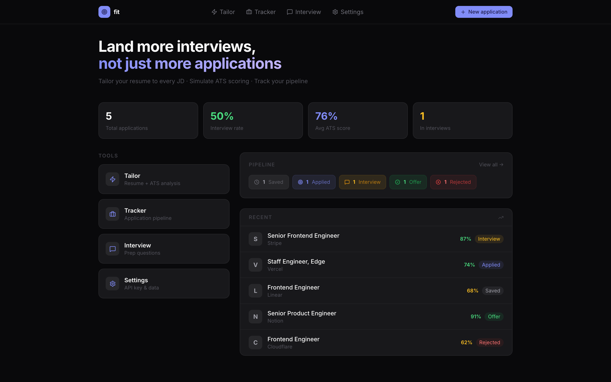
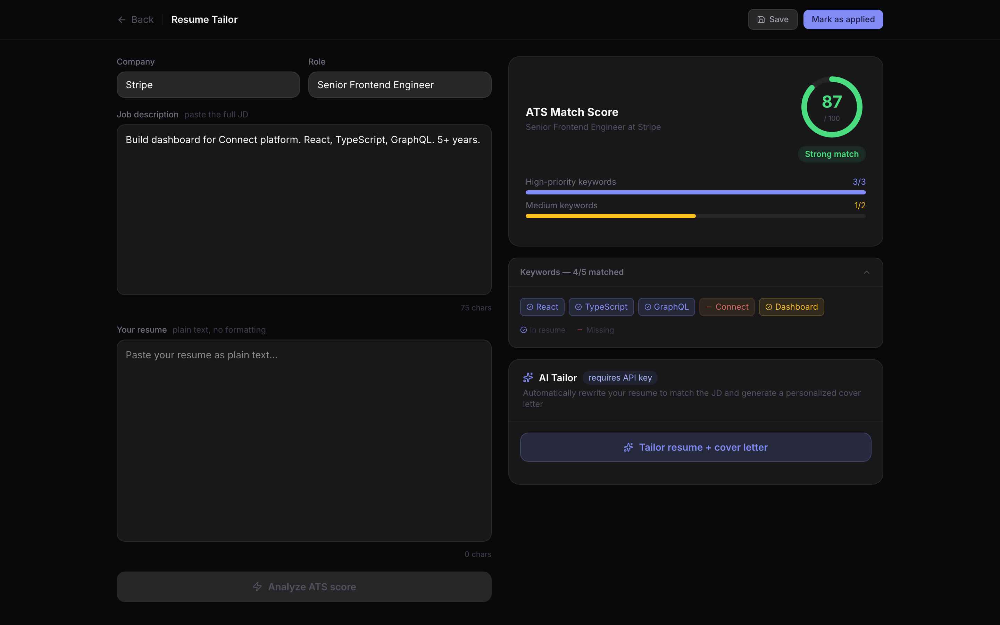
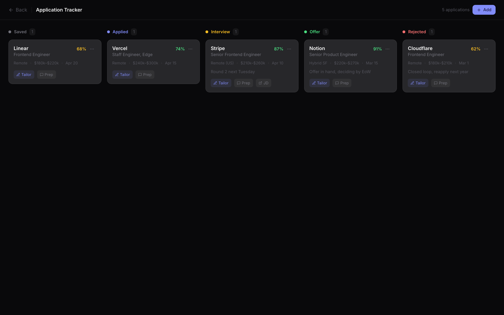

AI resume tailor with ATS scoring, cover letters, and job tracker



# Fit — Promo Kit for Affiliates
**Product:** Fit — AI resume tailor with ATS scoring and job tracker
**Price:** $39 one-time
**Your link:** https://whop.com/myfileapps/fit (replace with your affiliate URL)
**Commission:** 50% per sale = ~$19.50
---
## Screenshots
- `home.png` — Dashboard with applications, ATS scores, interview rate stats
- `tracker.png` — Application pipeline (Saved → Applied → Interview → Offer / Rejected)
- `tailor.png` — Resume tailor with JD input, ATS keyword match, suggestions
---
## Twitter / X (10 posts)
1. ```
Job hunting in 2026 = ATS keyword game.
Fit template tailors your resume to every JD + tracks the pipeline.
$39 one-time. {your_link}
```
2. ```
Stop submitting the same resume to 50 jobs.
Fit = paste JD, get keyword match score + tailor suggestions.
$39. {your_link}
```
3. ```
- Tailor resume per JD
- ATS keyword scoring
- Application tracker (Saved / Applied / Interview / Offer / Rejected)
- Interview question prep
$39 one-time. Self-hosted. {your_link}
```
4. ```
Bought a $39 job hunt template. Got 76% avg ATS score across 5 apps. 1 offer in hand.
{your_link}
```
5. ```
Resume tailoring tools charge $25/mo. Forever.
Fit is $39 once. Use it for every job hunt. Forever.
{your_link}
```
6. ```
Indie devs / engineers between gigs:
This template is the indie alternative to Teal / Jobscan.
$39. {your_link}
```
7. ```
Best $39 I spent this job hunt:
Resume tailored. ATS score per app. Interview questions queued.
{your_link}
```
8. ```
Fit template — full Next.js source, $39 one-time.
AI resume tailor + ATS scorer + application tracker + interview prep.
{your_link}
```
9. ```
Recruiters spend 7s scanning resumes.
ATS spends 0s reading them — it pattern-matches keywords.
Fit shows you exactly which keywords you're missing. $39.
{your_link}
```
10. ```
Stop guessing why you got ghosted.
ATS rejected you. Fit shows you why for $39.
{your_link}
```
---
## Reddit (5 posts)
### r/SideProject
```
Title: Used a $39 job hunt template through 50 apps — best buy this year
Spent $39 on Fit — full Next.js source. Resume tailor (paste JD → keyword match), ATS scoring, application tracker, interview question prep.
Self-hosted on Vercel for free. Replaced 3 paid tools.
{your_link}
```
### r/Entrepreneur
```
Title: $39 one-time AI resume tailor instead of $25/mo Teal / Jobscan
Just used Fit — full source code. Pasting JDs, getting tailored resume + ATS score + missing keyword list.
Way cheaper than the $25/mo subscription tools that essentially do the same thing.
{your_link}
```
### r/jobs
```
Title: Self-hosted job hunt template — $39 one-time
For other job seekers: Fit is a Next.js template. Tailor your resume to each JD, get ATS keyword match score, track applications through pipeline (Saved → Applied → Interview → Offer / Rejected), prep interview questions.
Self-hosted, no subscription, full source code.
{your_link}
```
### r/cscareerquestions
```
Title: Built / bought a $39 ATS resume tool — got my interview rate to 50%
Spent $39 on Fit template. Tailoring resume to each company's JD. Interview rate went from 8% (generic resume) to 50% (tailored).
Sample size of one, but the keyword match scoring is real.
{your_link}
```
### r/webdev
```
Title: Job hunt template (Next.js + TS) — $39 one-time
Clean code:
- Application list with status pipeline
- Resume tailor: paste JD, see keyword matches with importance scores
- ATS score 0-100 per app
- Interview question generator
- Settings for OpenAI key (BYOK)
{your_link}
```
---
## Telegram / Discord DM (3 templates)
### Cold DM #1
```
Hey — saw you're job hunting / between gigs.
Found a $39 one-time AI resume tailor template. Per-JD keyword matching, ATS score, application tracker. Full Next.js source.
{your_link}
```
### Cold DM #2
```
Quick one — I get 50% commission if you grab this $39 job hunt template.
It's solid: resume tailor, ATS score, application pipeline (Saved / Applied / Interview / Offer), interview prep. Self-hosted.
{your_link}
```
### Repost in groups
```
For job hunters / engineers between gigs:
Fit template — $39 one-time
AI resume tailor + ATS scorer + tracker
Self-hosted, no monthly fee
{your_link}
```
---
## TikTok / Reels script (30s)
```
[Hook 0-3s — show ATS score 87% with green keywords]
"Why are people sending the same resume to 50 jobs?"
[3-10s — show resume tailor with keyword matches]
"Paste the JD. Fit shows which keywords match. Which are missing."
[10-20s — show pipeline tracker]
"Track every app: Saved → Applied → Interview → Offer."
[20-27s — show interview question prep]
"Then it generates interview questions based on the JD."
[27-30s — CTA]
"$39 one-time. Link in bio."
```
---
## Hashtags
```
#jobsearch #careeradvice #resume #ats #indiedev #saas #nextjs #typescript #onetimepurchase #jobhunt #careerchange #microsaas #cscareer
```
---
## Where to post (priority order)
1. **Reddit** — r/jobs, r/cscareerquestions, r/EngineeringResumes, r/SideProject
2. **LinkedIn** — career coaches, job hunters
3. **Twitter/X** — reply under "ATS rejected my resume" / job hunt threads
4. **TikTok** — "POV: tailoring my resume to actually pass ATS"
5. **Telegram** — career / job hunt channels
6. **Indie Hackers** — show & tell with the ATS score screenshot
7. **Facebook groups** — career change communities